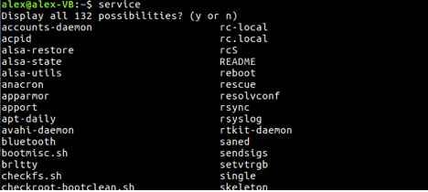

В предыдущих лабораторных работах взаимодействие с командным интерпретатором Shell осуществлялось с помощью командной строки. Однако, Shell является также и языком программирования, который применяется для написания командных файлов (shell - файлов). Командные файлы также называются скриптами и сценариями. Shell - файл содержит одну или несколько выполняемых команд (процедур), а имя файла в этом случае используется как имя команды.
Командная оболочка в любых unix-подобных системах, к которым относится и GNU/Linux, является обычной программой, запускаемой как в текстовой консоли (которая используется всё реже), так и в графической среде – в окне эмулятора терминала, доступного в любой Linux-системе.
Ее задача проста и очевидна: принять строку (или строки) ввода, произвести их синтаксический анализ и на основе результатов этого анализа отреагировать соответствующим образом – выполнить команду, запустить программу, вывести диагностическое сообщение и т.п.
Почти во всех дистрибутивах Linux для пользователей по умолчанию назначается командная оболочка bash.
Существуют и другие командные оболочки – tcsh (версия C-shell), ksh (Korn Shell), zsh и т.д. – у каждой есть свои достоинства и недостатки, а также свои группы поклонников. BASH — Bourne-Again SHell (что может переводится как «перерожденный шел», или «Снова шел Борна(создатель sh)»), самый популярный командный интерпретатор в "юниксоподобных" системах, в особенности в GNU/Linux. Ниже приведу ряд встроенных команд, которые мы будем использовать для создания своих скриптов.
Для того, чтобы узнать название shell Linux, используемой в текущий момент, необходимо выполнить всего 2 простых шага:
Разумеется, этот язык не компилируемый, а интерпретируемый. Он допускает использование переменных: системных или собственных. Последовательность выполнения команд программы изменяется с помощью конструкций проверки условия и выбора соответствующего варианта: if-then-else и case. Циклы while, until и for позволяют автоматизировать многократно повторяющиеся действия. Имеется возможность объединять группы команд в логические блоки. Вы можете даже писать настоящие функции с передачей в них параметров. Таким образом, налицо все признаки и характеристики полноценного языка программирования.
В простейшем случае, скрипт -- это ни что иное, как простой список команд системы, записанный в файл. Создание скриптов поможет сохранить ваше время и силы, которые тратятся на ввод последовательности команд всякий раз, когда необходимо их выполнить.
Когда скрипт запускается в подоболочке, вы должны указать, какая командная оболочка должна запустить скрипт. Тип оболочки, для которой вы написали скрипт, может не оказаться оболочкой, используемой в вашей системе по умолчанию, так что команды, которые вы вводите, могут привести к ошибкам, если они выполняются неверной оболочкой.
В первой строке скрипта указывается оболочка, которая должна быть запущена. Первыми двумя символами в первой строке должны быть символы "#!", затем следует указать путь к командной оболочке, которая должна интерпретировать команды, следующие далее. Пустые строки также считаются строками, так что не начинайте свой скрипт с пустой строки.
В данном курсе все скрипты должны начинаться со следующей строки:
#!/bin/bash
Как уже указывалось ранее, это означает, что исполняемый файл Bash можно найти в директории /bin.
Так же все файлы скриптов должны быть исполняемыми, то есть им требуется прописать права командой chmod (так чтобы у пользователя(ну либо у всех) стояла 7-ка в правах).
Переменные
Для того, что бы объявить переменную в bash, сперва необходимо выбрать имя этой переменной. Имя переменной регистрозависемо. Лучше всего в имени переменной использовать верхний регистр букв. Конечно же вы свободны использовать любые буквы или цифры, главное, что бы имя не начиналось с цифры. Необходимо всегда помнить о различиях между именем переменной и ее значением. Если variable1 — это имя переменной, то $variable1 — это ссылка на ее значение. «Чистые» имена переменных, без префикса $, могут использоваться только при объявлении переменный, при присваивании переменной некоторого значения, при удалении (сбросе), при экспорте и в особых случаях — когда переменная представляет собой название сигнала. Давайте переделаем наш скрипт «Hellow World» так что бы в нем появилась переменная:
#!/bin/bash STRING="Hellow World" echo $STRING
Команды
Типы переменных в bash В отличие от большинства других языков программирования, Bash не производит разделения переменных по «типам». По сути, переменные Bash являются строковыми переменными, но, в зависимости от контекста, Bash допускает целочисленную арифметику с переменными.
Исполнение shell-процедуры внешне ничем не отличается от исполнения любой команды Unix. Для передачи информации в процедуру существует 3 способа:
В процедуре можно использовать любые конструкции, допустимые в командной строке операционной системы (именованные и неименованные программные каналы, конвейеры команд, переадресацию ввода-вывода и т.д.).
Позиционные параметры процедуры в теле процедуры имеют имена: $0, $1, $2 и т.д., где $0 – имя процедуры, $1 – первый позиционный параметр процедуры, $2 – второй позиционный параметр процедуры и т.д.
Для организации ветвящихся алгоритмов обработки в процедурах используется конструкция:
if <список команд 1> then <список команд 2> else <список команд 3> fi
Или
if <список команд 1> then <список команд 2> fi
#!/bin/sh a=10 b=20 if [ $a == $b ] then echo "a is equal to b" else echo "a is not equal to b" fi
if [ -z "$myvar" ]
then
echo "Переменная 'myvar' не определена."
fi
if [ "$myvar" -eq 3 ]
then
echo "myvar равно 3"
fi
В качестве команд возвращающих код возврата могут выступать структуры [[ , [ , test, (( )) или любая другая(или несколько) linux-команда "test" - используется для логического сравнения. после выражения, необходима закрывающая скобка "]" [ - синоним команды test [[ - расширенная версия "[" (начиная с версии 2.02)(как в примере), внутри которой могут быть использованы || (или), & (и). Должна иметь закрывающую скобку "]]" (( )) - математическое сравнение.
Cписок логических операторов, которые используются для конструкции if-then-else-fi:
Для организации циклических алгоритмов используются конструкции:
while <список команд 1> do <список команд 2> done
until <список команд 1> do <список команд 2> done
for <переменная> = <строка> do <список команд 2> done
for ((expr1; expr2; exprN )) do <список команд 2> done
В первой конструкции циклически выполняется список команд 2 до тех пор, пока код возврата последней команды из списка 1 остается равным 0.
Во второй конструкции выполняется список команд 2 до тех пор, пока код возврата последней команды из списка 1 остается не равным 0.
третьей конструкции список команд 2 выполняется 1 раз для каждого значения переменной, которая последовательно приравнивается к очередному слову из строки.
В четвертой конструкции список команд выполняется по одному разу для каждого из указанных выражений.
Так же имейте в виду, что скрипт можно запустить прямо из командной строки, вот таким способом прямо в косноли введя скрипт.
$ for f in $( ls /var/ ); do echo $f; done
Так же примеры скриптов есть в ссылках.
#перемещает все файлы в каталог, удалит его вместе с содержимым, а затем создаст это каталог заново. #!/bin/bash touch file1 mkdir trash mv file1 trash rm -rf trash mkdir trash echo “Файл удален!”
#!/bin/bash # Эта программа считает от 1 до 10: for i in 1 2 3 4 5 6 7 8 9 10; do echo $i done
#Проверяем нахождение подстроки в строке string='My string'; if [[ "$string" == "My" ]] then echo "It's there!"; fi needle='y s' if [[ "$string" == "$needle" ]]; then echo "haystack '$string' contains needle '$needle'" fi
#Итерация по переданным аргументам
for var in "$@"
do
echo "$var"
done
#Встроенный if/else
#!/bin/bash
# объявление выбранной переменной и присваивание ей значения 4
choice=4
# Вывод на stdout
echo "1. Bash"
echo "2. Scripting"
echo "3. Tutorial"
echo -n "Please choose a word [1,2 or 3]? "
# Повторение цикла, пока переменная равна 4
# bash цикл while
while [ $choice -eq 4 ]; do
# чтение введенного значения
read choice
# bash nested if/else
if [ $choice -eq 1 ] ; then
echo "You have chosen word: Bash"
else
if [ $choice -eq 2 ] ; then
echo "You have chosen word: Scripting"
else
if [ $choice -eq 3 ] ; then
echo "You have chosen word: Tutorial"
else
echo "Please make a choice between 1-3 !"
echo "1. Bash"
echo "2. Scripting"
echo "3. Tutorial"
echo -n "Please choose a word [1,2 or 3]? "
choice=4
fi
fi
fi
done
#!/bin/bash
# bash цикл
for f in $( ls /var/ ); do
echo $f
done
За заданием подходить к преподавателю.